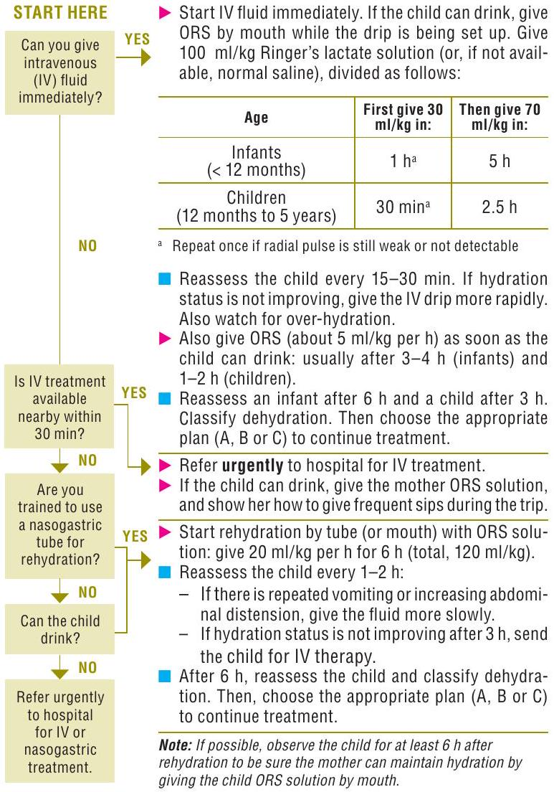

CHAPTER 5
Diarrhoea
This chapter gives treatment guidelines on the management of acute diarrhoea (with severe, some or no dehydration), persistent diarrhoea and dysentery in children aged 1 week to 5 years. Assessment of severely malnourished children is described in sections 7.2 and 7.4.3 (pp. 198 and 203). The three essential elements in the management of all children with diarrhoea are rehydration therapy, zinc supplementation and counselling for continued feeding and prevention.
In diarrhoea, there is excess loss of water, electrolytes (sodium, potassium, and bicarbonate) and zinc in liquid stools. Dehydration occurs when these losses are not adequately replaced and there are deficits of water and electrolytes. The degree of dehydration is graded according to symptoms and signs that reflect the amount of fluid lost; see sections 2.3 (p. 43) and 5.2 (p. 127). The rehydration regimen is selected according to the degree of dehydration. All children with diarrhoea should receive zinc supplements.
During diarrhoea, decreased food intake and nutrient absorption and increased nutrient requirements often combine to cause weight loss and failure to grow. Malnutrition can make diarrhoea more severe, more prolonged and more frequent than in well-nourished children. This vicious circle can be broken by giving nutrient-rich foods during and continuing after the diarrhoea episode, when the child is well.
Antibiotics should not be used except for children with bloody diarrhoea (probable shigellosis), suspected cholera with severe dehydration and other serious non-intestinal infections such as pneumonia and urinary tract infection. Antiprotozoal drugs are rarely indicated. ‘Antidiarrhoeal’ drugs and anti-emetics should not be given to young children with acute or persistent diarrhoea or dysentery: they do not prevent dehydration or improve nutritional status, and some have dangerous, sometimes fatal, side-effects.
5.1 Child presenting with diarrhoea
History
A careful feeding history is essential in the management of a child with diarrhoea. Inquiries should also be made about:
- frequency of stools
- number of days of diarrhoea
- blood in stools
- report of a cholera outbreak in the area
- recent antibiotic or other drug treatment
- attacks of crying with pallor in an infant.
Examination
Look for:
- signs of some dehydration or severe dehydration:
- restlessness or irritability
- lethargy or reduced level of consciousness
- sunken eyes
- skin pinch returns slowly or very slowly
- thirsty or drinks eagerly, or drinking poorly or not able to drink
- blood in stools
- signs of severe malnutrition
- abdominal mass
- abdominal distension.
There is no need for routine stool microscopy or culture in children with nonbloody diarrhoea.
| Diagnosis | In favour |
|---|---|
| Acute (watery) diarrhoea | - More than three loose stools per day - No blood in stools |
| Cholera | - Profuse watery diarrhoea with severe dehydration during cholera outbreak - Positive stool culture for Vibrio cholerae 01 or 0139 |
| Dysentery | - Blood mixed with the stools (seen or reported) |
| Persistent diarrhoea | - Diarrhoea lasting $\geq 14$ days |
| Diarrhoea with severe malnutrition | - Any diarrhoea with signs of severe acute malnutrition (see section 7.4 (p. 200) |
| Diarrhoea associated with recent antibiotic use | - Recent course of broad-spectrum oral antibiotics |
| Intussusception | - Blood and mucus in stools - Abdominal mass - Attacks of crying with pallor in infant or young child |
5.2 Acute diarrhoea
Assessing dehydration
For all children with diarrhoea, their hydration status should be classified as severe dehydration, some dehydration or no dehydration (Table 12) and appropriate treatment given. In a child with diarrhoea, assess the general condition, look for sunken eyes, make a skin pinch, and offer the child fluid to see if he or she is thirsty or drinking poorly.
| Classification | Signs or symptoms | Treatment |
|---|---|---|
| Severe dehydration | Two or more of the following signs: - lethargy or unconsciousness - sunken eyes - unable to drink or drinks poorly - skin pinch goes back very slowly ( $\geq 2 \mathrm{~s}$ ) |
- Give fluids for severe dehydration (see diarrhoea treatment plan C in hospital, p. 131) |
| Some dehydration | Two or more of the following signs: - restlessness, irritability - sunken eyes - drinks eagerly, thirsty - skin pinch goes back slowly |
- Give fluid and food for some dehydration (see diarrhoea treatment plan B, p. 135) - After rehydration, advise mother on home treatment and when to return immediately (see pp. 133-4) - Follow up in 5 days if not improving. |
| No dehydration | Not enough signs to classify as some or severe dehydration | - Give fluid and food to treat diarrhoea at home (see diarrhoea treatment plan A, p. 138) - Advise mother on when to return immediately (see p. 133) - Follow up in 5 days if not improving. |
5.2.1 Severe dehydration
Children with severe dehydration require rapid IV rehydration with close monitoring, followed by oral rehydration and zinc once the child starts to improve sufficiently. In areas where there is a cholera outbreak, give an antibiotic effective against cholera (p. 130).
Diagnosis
Severe dehydration should be diagnosed if any two signs or symptoms of severe dehydration are present in a child with diarrhoea (see Table 12).
Treatment
Children with severe dehydration should be given rapid IV rehydration followed by oral rehydration therapy.
Start IV fluids immediately. While the drip is being set up, give ORS solution if the child can drink.
Note: The best IV fluid solutions for rehydration are isotonic solutions: Ringer's lactate solution (called Hartmann's solution for Injection) and normal saline solution (0.9\% NaCI). Do not use 5\% glucose (dextrose) solution or 0.18\% saline with 5\% dextrose solution, as they increase the risk for hyponatraemia, which can cause cerebral oedema.
Give $100 \mathrm{ml} / \mathrm{kg}$ of the chosen solution, divided as shown in Table 13.
| Age (months) | First, give $30 \mathrm{ml} / \mathrm{kg}$ in: | Then, give $70 \mathrm{ml} / \mathrm{kg}$ in: |
|---|---|---|
| $<12$ | $1 \mathrm{h}^{\mathrm{a}}$ | 5 h |
| $\geq 12$ | $30 \mathrm{~min}^{\mathrm{a}}$ | 2.5 h |
a Repeat if the radial pulse is still very weak or not detectable.
For more information, see treatment plan C in hospital, p. 131, which includes guidelines for giving ORS solution by nasogastric tube or by mouth when IV therapy is not possible.
Cholera
- Suspect cholera in children > 2 years old who have acute watery diarrhoea and signs of severe dehydration or shock, if cholera is present in the area.
- Assess and treat dehydration as for other acute diarrhoea.
- Give an oral antibiotic to which strains of V. cholerae in the area are known to be sensitive. Possible choices are: erythromycin, ciprofloxacin and cotrimoxazole (for dosages, see Annex 2, p. 353).
- Prescribe zinc supplementation as soon as vomiting stops (pp. 133-4).
Monitoring
Reassess the child every 15-30 min until a strong radial pulse is present. Thereafter, reassess the child by checking skin pinch, level of consciousness and ability to drink at least every hour, in order to confirm that hydration is improving. Sunken eyes recover more slowly than other signs and are less useful for monitoring.
When the full amount of IV fluid has been given, reassess the child's hydration status fully, using Chart 7 (p. 13).
- If signs of severe dehydration are still present, repeat the IV fluid infusion outlined earlier. Persistent severe dehydration after IV rehydration is unusual; it usually occurs only in children who pass large watery stools frequently during the rehydration period.
- If the child is improving but still shows signs of some dehydration, discontinue IV treatment and give ORS solution for 4 h (see section 5.2.2 and treatment plan B, p. 135). If the child is usually breastfed, encourage the mother to continue breastfeeding frequently.
- If there are no signs of dehydration, follow the guidelines in section 5.1.3 and treatment plan A, p. 138. When appropriate, encourage the mother to continue breastfeeding frequently. Observe the child for at least 6 h before discharge, to confirm that the mother is able to maintain the child's hydration by giving ORS solution.
All children should start to receive some ORS solution (about $5 \mathrm{ml} / \mathrm{kg}$ per h) by cup when they can drink without difficulty (usually within $3-4 \mathrm{~h}$ for infants and $1-2 \mathrm{~h}$ for older children). ORS provides additional base and potassium, which may not be adequately supplied by IV fluid.
When severe dehydration is corrected, prescribe zinc (pp. 133-4).
Chart 13. Diarrhoea treatment plan C: Treat severe dehydration quickly
Follow the arrows. If the answer is YES, go across. If NO, go down.
5.2.2 Some dehydration
In general, children with some dehydration should be given ORS solution for the first 4 h at a clinic, while the child is monitored and the mother is taught how to prepare and give ORS solution.
Diagnosis
If the child has two or more of the following signs, he or she has some dehydration:
- restlessness or irritability
- thirsty and drinks eagerly
- sunken eyes
- skin pinch goes back slowly.
Note that if a child has only one of the above signs and one of the signs of severe dehydration (e.g. restlessness or irritable and drinking poorly), then the child also has some dehydration.
Treatment
In the first 4 h , give the child ORS solution according to the child's weight (or age if the weight is not known), as shown in Chart 14. If the child wants more to drink, give more.
Show the mother how to give the child ORS solution: a teaspoonful every 1-2 min if the child is < 2 years; frequent sips from a cup for an older child.
Check regularly to see whether there are problems.
- If the child vomits, wait 10 min ; then, resume ORS solution more slowly (e.g. a spoonful every $2-3 \mathrm{~min}$ ).
- If the child's eyelids become puffy, stop ORS solution, reduce the fluid intake and continue with breast milk. Weigh the child, and monitor urine output.
- Advise breastfeeding mothers to continue to breastfeed whenever the child wants.
Check blood glucose or electrolytes if possible in a child who is restless or irritable and convulsing, in case hypoglycaemia or hypernatraemia is present. Manage the child accordingly; if blood glucose measurement is not possible, give IV glucose or oral sugar.
If the mother cannot stay for 4 h , show her how to prepare ORS solution and give her enough ORS packets to complete rehydration at home plus enough for 2 more days.
Reassess the child after 4 h , checking for signs of dehydration listed earlier.
Note: Reassess the child before $4 h$ if he or she is not taking the ORS solution or seems to be getting worse.
- If there is no dehydration, teach the mother the four rules of home treatment:
- Give extra fluid.
- Give zinc supplements for 10-14 days.
- Continue feeding (see Chapter 10, p. 294).
- Return if the child develops any of the following signs:
- drinking poorly or unable to drink or breastfeed
- develops a general danger sign
- becomes sicker
- develops a fever
- has blood mixed with the stools or more than a few drops on the outside of the stool
- If the child still has some dehydration, repeat treatment with ORS solution for another 4 h , as above, and start to offer food, milk or juice and breastfeed frequently.
- If there are signs of severe dehydration, see section 5.2.1 (p. 129) for treatment.
Treatment plans B and A on pp. 135 and 138 give further details.
Give zinc supplements
Zinc is an important micronutrient for a child's overall health and development but is lost in greater quantities during diarrhoea. Replacement helps the child's recovery, reduces the duration and severity of the episode, and lowers the incidence of diarrhoea in the following 2-3 months.
Give zinc and advise the mother how much to give:
- $\leq 6$ months: half tablet ( 10 mg ) per day for 10-14 days
- $\geq 6$ months: one tablet ( 20 mg ) per day for 10-14 days
Feeding
Continuation of nutritious feeding is an important element in the management of diarrhoea.
In the initial 4-h rehydration period, do not give any food except breast milk. Breastfed children should continue to breastfeed frequently throughout the episode of diarrhoea. If they cannot suck from the breast, consider giving expressed breast milk either orally from a cup or by nasogastric tube.
- After 4 h, if the child still has some dehydration and ORS continues to be given, give food every $3-4 \mathrm{~h}$.
- All children > 6 months should be given some food before being sent home.
If the child is not normally breastfed, explore the feasibility of relactation (i.e. restarting breastfeeding after it was stopped, see p. 297) or give the usual breast milk substitute. If the child is $\geq 6$ months or already taking solid food, give freshly prepared foods - cooked, mashed or ground. The following are recommended:
- cereal or another starchy food mixed with pulses, vegetables and meat or fish, if possible, with 1-2 teaspoons of vegetable oil added to each serving
- Iocal complementary foods recommended by the IMCI in that area (see section 10.1.2, p. 299)
- fresh fruit juice or mashed banana to provide potassium.
Encourage the child to eat by offering food at least six times a day. Give the same foods after the diarrhoea stops, and give an extra meal a day for 2 weeks.
Chart 14. Diarrhoea treatment plan B: Treat some dehydration with oral rehydration salts
GIVE THE RECOMMENDED AMOUNT OF ORS IN THE CLINIC OVER 4 H
Determine amount of ORS to give during first 4 h :
| Age | $\leq \mathbf{4}$ months | $\mathbf{4}$ to $\leq \mathbf{12}$ months | $\mathbf{12}$ months to $\leq \mathbf{2}$ years | $\mathbf{2}$ years to $\leq \mathbf{5}$ years |
| Weight | <6 kg | 6-<10 kg | 10-<12 kg | 12-19 kg |
| ml | 200-400 ml | 400-700 ml | 700-900 ml | 900-1400 ml |
a Use the child's age only when you do not know the weight. The approximate amount of ORS required (in ml ) can also be calculated by multiplying the child's weight (in kg ) by 75.
If the child wants more ORS than shown, give more.
- Show the mother how to give ORS solution.
- Give frequent small sips from a cup.
- If the child vomits, wait 10 min , then continue, but more slowly.
- Continue breastfeeding whenever the child wants.
- After 4 h :
- Reassess the child and classify him or her for dehydration.
- Select the appropriate plan to continue treatment.
- Begin feeding the child in the clinic.
If the mother must leave before completing treatment:
- Show her how to prepare ORS solution at home.
- Show her how much ORS to give to finish the 4-h treatment at home.
- Give her enough ORS packets to complete rehydration. Also give her two packets as recommended in plan A.
- Explain the four rules of home treatment:
- Give extra fluid.
- Give zinc supplements.
- Continue feeding.
- Know when to return to the clinic.
See diarrhoea treatment plan A (p. 138) and mother's card (p. 322)
5.2.3 No dehydration
Children with diarrhoea but no dehydration should receive extra fluids at home to prevent dehydration. They should continue to receive an appropriate diet for their age, including continued breastfeeding.
Diagnosis
Diarrhoea with no dehydration should be diagnosed if the child does not have two or more signs that characterize some or severe dehydration, as described above (see Table 12, p. 128).
Chart 15. Diarrhoea treatment plan A: Treat diarrhoea at home
COUNSEL THE MOTHER ON THE FOUR RULES OF HOME TREATMENT: GIVE EXTRA FLUID. GIVE ZINC SUPPLEMENTS. CONTINUE FEEDING. KNOW WHEN TO RETURN TO THE CLINIC.
1. Give as much extra fluid as the child will take.
- Tell the mother to:
- Breastfeed frequently and for longer at each feed.
- If the child is exclusively breastfed, give ORS or clean water in addition to breast milk
- If the child is not exclusively breastfed, give one or more of the following: ORS solution, food-based fluids (such as soup, rice water and yoghurt drinks) or clean water.
It is especially important to give ORS at home when:
- the child has been treated according to plan B or plan C during this visit.
- the child cannot return to a clinic if the diarrhoea gets worse.
- Teach the mother how to mix and give ORS. Give the mother two packets of ORS to use at home.
- Show the mother how much fluid to give in addition to the usual fluid intake:
- $\leq 2$ years: $50-100 \mathrm{ml}$ after each loose stool
- $\geq 2$ years: 100-200 ml after each loose stool
Tell the mother to:
- Give frequent small sips from a cup.
- If the child vomits, wait 10 min . Then continue, but more slowly.
- Continue giving extra fluid until the diarrhoea stops.
2. Give zinc supplements.
- Tell the mother how much zinc to give:
- $\leq 6$ months: half tablet ( 10 mg ) per day for 10-14 days
- $\geq 6$ months: one tablet ( 20 mg ) per day for 10-14 days
Show the mother how to give zinc supplement:
- For infants, dissolve the tablet in a small amount of clean water, expressed milk or ORS in a small cup or spoon.
- Older children can chew the tablet or drink it dissolved in a small amount of clean water in a cup or spoon.
REMIND THE MOTHER TO GIVE THE ZINC SUPPLEMENT FOR THE FULL 10-14 DAYS.
3. Continue feeding.
4. Know when to return to the clinic.
See mother's card (p. 322)
5.3 Persistent diarrhoea
Persistent diarrhoea is diarrhoea, with or without blood, that begins acutely and lasts for $\geq 14$ days. When there is some or severe dehydration, persistent diarrhoea is classified as 'severe'.
The following guidelines are for children with persistent diarrhoea who are not severely malnourished. Severely malnourished children with severe persistent diarrhoea require hospitalization and specific treatment, as described in Chapter 7 (section 7.5.4, p. 219).
In areas where HIV infection is highly prevalent, suspect HIV infection if there are other suggestive clinical signs, and assess the child for HIV infection and do an appropriate HIV test (see Chapter 8, p. 225). Perform stool microscopy for parasites such as Isospora and Cryptosporidium.
5.3.1 Severe persistent diarrhoea
Diagnosis
Infants or children with diarrhoea lasting $\geq 14$ days with signs of dehydration (see Table 12, p. 128) have severe persistent diarrhoea and require hospital treatment.
- Assess the child for signs of dehydration
Treatment
- Give fluids according to treatment plan B or C, as appropriate (see pp. 135 and 131).
ORS solution is effective for most children with persistent diarrhoea. A few children, however, may have impaired glucose absorption, and ORS solution may not be as effective. When these children are given ORS, their stool volume increases markedly, thirst increases, signs of dehydration develop or worsen, and the stools contain a large amount of unabsorbed glucose. These children require IV rehydration until ORS solution can be taken without causing the diarrhoea to worsen.
Routine treatment of persistent diarrhoea with antibiotics is not effective and should not be done. Some children, however, have non-intestinal or intestinal infections that require specific antibiotic therapy.
- Examine every child with persistent diarrhoea for non-intestinal infections such as pneumonia, sepsis, urinary tract infection, oral thrush and otitis media, and treat appropriately.
- Give micronutrients and vitamins as shown in the box on p. 141.
- Treat persistent diarrhoea with blood in the stools with an oral antibiotic effective for Shigella, as described in section 5.4, p. 143.
- Give oral metronidazole at $10 \mathrm{mg} / \mathrm{kg}$ three times a day for 5 days only if:
- microscopic examination of fresh faeces reveals trophozoites of Entamoeba histolytica within red blood cells; or
- trophozoites or cysts of giardia are seen in the faeces, or
- two different antibiotics that are usually effective for Shigellalocally have been given without clinical improvement.
- if stool examination is not possible, when diarrhoea persists for > 1 month.
Feeding
Careful attention to feeding is essential for all children with persistent diarrhoea. Breastfeeding should be continued for as often and as long as the child wants. Other food should be withheld for 4-6 h only for children with dehydration who are being rehydrated following treatment plan B or C .
Hospital diet
Children treated in hospital require special diets until their diarrhoea lessens and they are gaining weight. The goal is to give a daily intake of at least 110 calories/kg.
Infants aged < 6 months
- Encourage exclusive breastfeeding. Help mothers who are not breastfeeding exclusively to do so.
- If the child is not breastfeeding, give a breast milk substitute that is low in lactose, such as yoghurt, or is lactose-free. Use a spoon or cup; do not use a feeding bottle. Once the child improves, help the mother to re-establish lactation.
- If the mother is not breastfeeding because she is HIV-positive, she should receive appropriate counselling about the correct use of breast milk substitutes.
Children aged $\geq 6$ months
Feeding should be restarted as soon as the child can eat. Food should be given six times a day to achieve a total intake of at least 110 calories/kg per day. Many children will eat poorly, however, until any serious infection has been treated for 24-48 h. These children may require nasogastric feeding initially.
Two recommended diets
Tables 14 and 15 show two diets recommended for children and infants aged >6 months with severe persistent diarrhoea. If there are signs of dietary failure (see below) or if the child is not improving after 7 days of treatment, the first diet should be stopped and the second diet given for 7 days.
Successful treatment with either diet is characterized by:
- adequate food intake
- weight gain
- fewer diarrhoeal stools
- absence of fever.
The most important criterion is weight gain. Weight should increase for at least three successive days before weight gain can be assumed.
Give additional fresh fruit and well-cooked vegetables to children who are responding well. After 7 days of treatment with the effective diet, they should resume an appropriate diet for their age, including milk, which provides at least 110 calories/kg per day. Children may then return home but must be followed up regularly to ensure continued weight gain and compliance with feeding advice.
Dietary failure is indicated by:
- an increase in stool frequency (usually to $>10$ watery stools a day), often with a return of signs of dehydration (usually shortly after a new diet is begun), or
- failure to establish daily weight gain within 7 days.
The diet should contain at least 70 calories $/ 100 \mathrm{~g}$, provide milk or yoghurt as a source of animal protein, but no more than 3.7 g lactose/kg per day and should provide at least $10 \%$ of calories as protein. The following example provides 83 calories $/ 100 \mathrm{~g}, 3.7 \mathrm{~g}$ lactose/ kg per day and $11 \%$ of calories as protein:
| full-fat dried milk (or whole liquid milk: 85 ml ) | 11 g |
| rice | 15 g |
| vegetable oil | 3.5 g |
| cane sugar | 3.0 g |
| water to make up | 200 ml |
The diet should contain at least 70 calories/ 100 g and provide at least $10 \%$ of calories as protein (egg or chicken). The following example provides 75 calories/100 g:
| whole egg | 64 g |
| rice | 3 g |
| vegetable oil | 4 g |
| glucose | 3 g |
| water to make up | 200 ml |
Finely ground, cooked chicken ( 12 g ) can be used in place of egg to give a diet providing 70 calories $/ 100 \mathrm{~g}$
Monitoring
Nurses should check the following daily:
- body weight
- temperature
- food taken
- number of diarrhoeal stools.
5.3.2 Persistent diarrhoea (non-severe)
Children with non-severe persistent diarrhoea do not require hospital treatment but need special feeding and extra fluids at home.
Diagnosis
Children with diarrhoea lasting $\geq 14$ days but with no signs of dehydration or severe malnutrition
Treatment
- Treat the child as an outpatient.
- Give supplementary multivitamins and minerals as shown in the box on p. 141.
Prevent dehydration
Give fluids according to treatment plan A, p. 138. ORS solution is effective for most children with persistent diarrhoea. In a few, however, glucose absorption is impaired, and when they are given ORS solution their stool volume increases markedly, thirst increases, signs of dehydration develop or worsen, and the stools contain a large amount of unabsorbed glucose. These children require admission to hospital for IV rehydration until ORS solution can be taken without aggravating the diarrhoea.
Identify and treat specific infections
Do not routinely treat with antibiotics, as they are not effective; however, give antibiotic treatment to children with specific non-intestinal or intestinal infections. Until these infections are treated correctly, persistent diarrhoea will not improve.
- Non-intestinal infections. Examine every child with persistent diarrhoea for non-intestinal infections, such as pneumonia, sepsis, urinary tract infection, oral thrush and otitis media. Treat each specific disease.
- Intestinal infections. Treat persistent diarrhoea with blood in the stools with an oral antibiotic that is effective for Shigella, as described in section 5.3.1.
Feeding
Careful attention to feeding is essential for all children with persistent diarrhoea. These children may have difficulty in digesting animal milk other than breast milk.
- Advise the mother to reduce the amount of animal milk in the child's diet temporarily.
- Continue breastfeeding and give appropriate complementary foods:
- If still breastfeeding, give more frequent, longer breastfeeds, day and night.
- If taking other animal milk, explore the feasibility of replacing animal milk with fermented milk products (e.g. yoghurt), which contain less lactose and are better tolerated.
- If replacement of animal milk is not possible, limit animal milk to $50 \mathrm{ml} / \mathrm{kg}$ per day. Mix the milk with the child's cereal, but do not dilute it.
- Give other foods appropriate for the child's age to ensure an adequate caloric intake. Infants aged > 4 months whose only food has been animal milk should begin to take solid foods.
- Give frequent small meals, at least six times a day.
Supplementary micronutrients, including zinc
See box, p. 141.
Follow-up
- Ask the mother to bring the child back for reassessment after 5 days, or earlier if the diarrhoea worsens or other problems develop.
- Fully reassess children who have not gained weight or whose diarrhoea has not improved in order to identify the cause, such as dehydration or infection, which requires immediate attention or admission to hospital.
Those who have gained weight and who have three or fewer loose stools per day may resume a normal diet for their age.
5.4 Dysentery
Dysentery is diarrhoea presenting with frequent loose stools mixed with blood (not just a few smears on the surface). Most episodes are due to Shigella, and nearly all require antibiotic treatment. Shigellosis can lead to life-threatening complications, including intestinal perforation, toxic megacolon and haemolytic uraemic syndrome.
Diagnosis
The diagnostic signs of dysentery are frequent loose stools mixed with visible red blood. Other findings on examination may include:
- abdominal pain
- fever
- convulsions
- lethargy
- dehydration (see section 5.2, p. 127)
- rectal prolapse.
Treatment
Most children can be treated at home.
- Admit to hospital:
- young infants (<2 months old)
- severely ill children, who look lethargic, have abdominal distension and tenderness or convulsions
- children with any another condition requiring hospital treatment.
- Give an oral antibiotic (for 5 days) to which most local strains of Shigella are sensitive.
- Give ciprofloxacin at $15 \mathrm{mg} / \mathrm{kg}$ twice a day for 3 days if antibiotic sensitivity is unknown. If local antimicrobial sensitivity is known, follow local guidelines.
- Give ceftriaxone IV or IM at $50-80 \mathrm{mg} / \mathrm{kg}$ per day for 3 days to severely ill children or as second-line treatment.
Give zinc supplements as for children with watery diarrhoea.
Note: There is widespread Shigella resistance to ampicillin, co-trimoxazole, chloramphenicol, nalidixic acid, tetracycline, gentamicin and first- and secondgeneration cephalosporin, which are no longer effective. There is also already reported resistance to ciprofloxacin in some countries.
Follow-up
Follow up children after 2 days, and look for signs of improvement, such as no fever, fewer stools with less blood, improved appetite.
- If there is no improvement after 2 full days of treatment:
- check for other conditions (see Chapter 2),
- stop the first antibiotic, and give a second-line antibiotic or a known effective against Shigella in the area (see Annex 2 for dosages).
- If the two antibiotics that are usually effective against Shigella in the area have each been given for 2 days, with no sign of clinical improvement, check for other conditions (consult a standard paediatric textbook).
- If amoebiasis is possible, give metronidazole at $10 \mathrm{mg} / \mathrm{kg}$ three times a day for 5 days.
Admit the child if there is an indication requiring hospital treatment.
Infants and young children
Consider surgical causes of blood in the stools (for example, intussusception; see section 9.4, p. 281), and refer to a surgeon, if appropriate. Dysentery is unusual in neonates and young infants; therefore, consider life-threatening bacterial sepsis
For suspected sepsis give IM or IV ceftriaxone at $100 \mathrm{mg} / \mathrm{kg}$ once daily for 5 days.
Severely malnourished children
See Chapter 7 for the general management of severely malnourished children.
Treat for Shigella first and then for amoebiasis on clinical grounds if laboratory examination is not possible.
If microscopic examination of fresh stools in a reliable laboratory is possible, check for trophozoites of Entamoeba histolytica in red blood cells and treat for amoebiasis, if present. Also examine stools for trophozoites of Giardia lamblia and treat if present.
Supportive care
Supportive care includes the prevention or correction of dehydration and continued feeding. For guidelines on supportive care of severe acutely malnourished children with bloody diarrhoea, see also Chapter 7 (p. 197).
Never give drugs for symptomatic relief of abdominal or rectal pain or to reduce the frequency of stools, as these drugs can increase the severity of the illness.
Treatment of dehydration
- Assess the child for signs of dehydration and give fluids according to treatment plan A, B or C (pp. 138, 135, 131), as appropriate.
Nutritional management
Ensuring a good diet is important, as dysentery has a marked adverse effect on nutritional status. Feeding is often difficult because of lack of appetite; return of appetite is an important sign of improvement.
Breastfeeding should be continued throughout the course of the illness, more frequently than normal, if possible, because the infant may not take the usual amount per feed.
- Children aged 6 months or more should receive their normal foods. Encourage the child to eat, and allow the child to select preferred foods.
Complications
- Dehydration. Dehydration is the commonest complication of dysentery, and children should be assessed and managed for dehydration irrespective of any other complication. Give fluids according to treatment plan A, B or C , as appropriate.
- Potassium depletion. Potassium depletion can be prevented by giving ORS solution (when indicated) or potassium-rich foods such as bananas, coconut water or dark-green leafy vegetables.
- High fever. If the child has high fever ( $\geq 39^{\circ} \mathrm{C}$ or $\geq 102.2^{\circ} \mathrm{F}$ ) that appears to be causing distress, give paracetamol and consider severe bacterial infection.
- Rectal prolapse. Gently push back the rectal prolapse using a surgical glove or a wet cloth. Alternatively, prepare a warm solution of saturated magnesium sulfate, and apply compresses with this solution to reduce the prolapse by decreasing oedema.
- Convulsions. A single convulsion is the commonest finding. If they are prolonged or repeated, give diazepam (see chart 9, p. 15). Avoid giving rectal diazepam. Always check for hypoglycaemia.
- Haemolytic uraemic syndrome. Where laboratory tests are not possible, suspect haemolytic uraemic syndrome in patients with easy bruising, pallor, altered consciousness and low or no urine output.
- Toxic megacolon. Toxic megacolon usually presents with fever, abdominal distension, pain and tenderness with loss of bowel sounds, tachycardia and dehydration. Give IV fluids for dehydration, pass a nasogastric tube, and start antibiotics.
Further details of treatment can be found in standard paediatric textbooks.